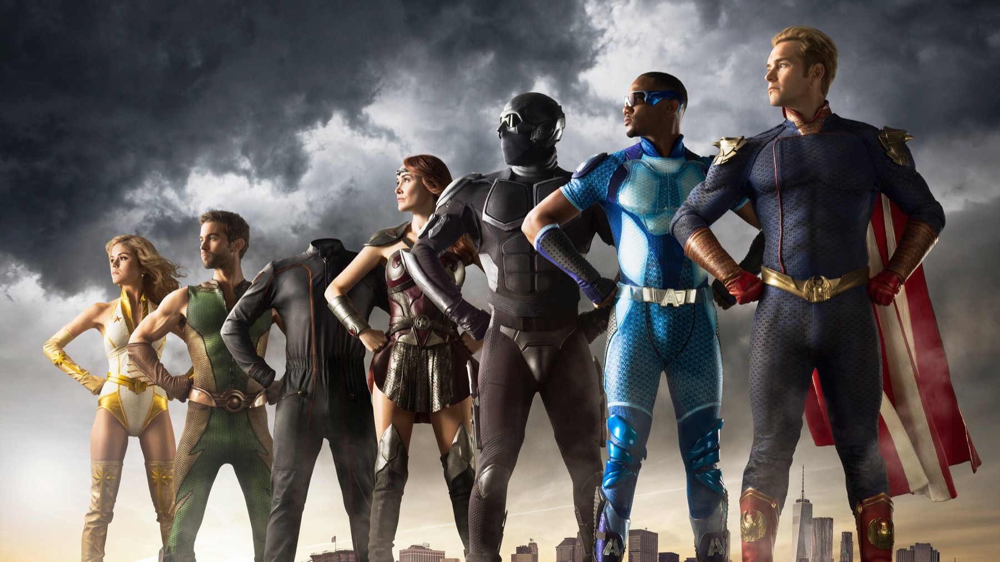

The Boys – Stagione 3
Con Soldier Boy, Homelander trova qualcuno che gli somiglia fin troppo: è la stagione migliore della serie, ma il finale frena
The Boys 3 sostiene una tesi che le prime due annate si limitavano a suggerire: la violenza dei potenti si eredita, come un vizio di famiglia. A trasmetterla è Soldier Boy, il primo supereroe americano, che Eric Kripke ha descritto come «Homelander prima di Homelander». Funziona quasi sempre, ma l'ultimo episodio rimette in fila le carte senza cambiare il gioco, e dopo sette puntate così riuscite si sente.
Un anno dopo gli eventi della seconda stagione, i Boys lavorano per l'ufficio di Victoria Neuman, che si occupa dei supereroi. A Butcher serve un'arma contro Homelander, e la trova in un nome che sembrava sepolto: Soldier Boy, dato per morto. Per arrivare a lui i Boys scoprono il V24, un composto che regala per un tempo limitato i poteri dei supereroi e che crea dipendenza.

Perché Soldier Boy cambia tutto?
Perché è il primo cattivo della serie che non soffre di insicurezza. Homelander, nelle prime due stagioni, terrorizzava gli altri perché temeva di non essere amato; Soldier Boy non ha di questi pensieri e non vuole piacere a nessuno. Jensen Ackles, che con Kripke aveva già lavorato a lungo in Supernatural, lo recita come un uomo di un'altra epoca che esce da una lunga assenza e pretende ancora di comandare. Nel quinto episodio uccide Crimson Countess, una sua vecchia compagna di Payback, e a quel punto capiamo che i Boys non hanno recuperato un'arma: hanno riacceso una bomba.
Il confronto con la seconda stagione, che abbiamo recensito, spiega la differenza. Là Homelander trovava in Stormfront una rivale che gli rubava la scena e lo faceva sentire piccolo; qui trova qualcuno che lo specchia senza pietà, e Antony Starr, che prima recitava l'ansia di un bambino enorme, ora recita la rabbia di chi si riconosce. Per questo il suo Homelander fa più paura: perde il controllo davanti agli altri, e gli altri vedono, quindi nessuno può più far finta di niente.
La scena che vale la stagione
Arriva nel sesto episodio, intitolato in italiano «Eroegasmo» (Herogasm in originale). L'albo di Garth Ennis e Darick Robertson metteva in scena un'orgia di una settimana su un'isola; la serie la riduce a un raduno annuale ospitato dai gemelli TNT in Vermont, e su Multiplayer.it osservano che l'orgia diventa «una lunga battuta» tra l'inizio e la fine della puntata. Il vero spettacolo, però, comincia quando la casa dei gemelli è già un cumulo di macerie, dopo un'esplosione di energia di Soldier Boy che uccide i padroni di casa e diversi ospiti.
Tra i calcinacci Homelander raggiunge Soldier Boy e gli parla prima di colpirlo: da ragazzo, gli dice, era il suo eroe. Soldier Boy lo liquida come una brutta copia, e Homelander risponde che lui è la versione migliorata (in originale «a knockoff» e «the upgrade»). Finite le parole, allora, si picchiano sul serio. Butcher, appena raggiunto dai raggi di Homelander, si rialza e si butta nella mischia; Hughie, a cui Butcher ordina di andarsene, resta, perché preferisce morire con lui piuttosto che lasciare vivo Homelander. In tre riescono a tenerlo fermo, e mentre Soldier Boy si prepara a scaricargli addosso la sua esplosione, Homelander si libera e vola via. I tre, invece di festeggiare, escono dalla casa sconfitti.
In quello scambio di battute c'è tutta la stagione. Nell'originale cartaceo, durante Herogasm, Homelander convince Soldier Boy a giacere con lui promettendogli un posto tra i Sette. Kripke ha spiegato che nella serie quella scena è stata tolta perché, parole sue, «non tornava» con il Soldier Boy che stavano costruendo, e che la stagione parla di padri e figli, di come un padre passi il proprio trauma alla generazione dopo. Al posto di una gag di cattivo gusto abbiamo quindi un figlio che cerca l'approvazione di un modello e riceve solo disprezzo. Per una puntata costruita per scandalizzare, ha un cuore sorprendente.
Dentro il caos ci sono anche le scene piccole che fanno la differenza. Mother's Milk scopre che Soldier Boy anni fa ha ucciso per errore suo nonno, e da quel momento l'alleanza con lui diventa un rospo da ingoiare. Annie, intanto, rifiuta l'alleanza con Neuman e lascia i Sette, e per una volta la sua scelta è netta.

Il prezzo del potere
La stagione regge perché ogni scorciatoia ha una fattura. Butcher usa il V24 già nel secondo episodio e uccide Gunpowder, convinto di essere invincibile. Più avanti scopre che quel composto è letale dopo tre-cinque dosi, e così le scene d'azione prendono un peso che nelle altre stagioni non avevano: ora sappiamo che ogni colpo gli costa. Karl Urban interpreta il declino senza gridarlo, perché la sua stanchezza dice più di ogni monologo.
Rispetto alla quinta stagione, che abbiamo raccontato qui, la differenza è nella cura dei personaggi: nella quinta la serie corre e lascia indietro diversi volti, mentre nella terza ognuno ha una ferita e un conto da regolare. Per questo la consideriamo la stagione migliore: la quinta ha un Homelander più terrificante, ma la terza è quella in cui ogni personaggio conta.
Cosa non funziona
Il punto debole è l'ultimo episodio, dove le carte tornano in fila e la serie sembra pensare alla stagione dopo. Alla resa dei conti nella torre Vought, Butcher manca l'occasione di colpire Homelander, e quando Soldier Boy sta per scatenare un'altra esplosione è Maeve a trascinarlo lontano dagli altri, mentre Homelander scappa con Ryan. Alla fine Butcher è malato per colpa del V24, Annie entra nei Boys e Soldier Boy finisce in custodia del governo: tutti i pezzi tornano sulla scacchiera per la stagione successiva. Su WION Kshitij Mohan Rawat scrive che il finale riporta la storia «al punto di partenza», e siamo d'accordo. La scena più forte, invece, è un'altra: Homelander uccide un uomo davanti a una folla che applaude. È la vera conclusione del discorso della stagione, molto più dello scontro che la precede.
Pesa anche l'altalena tra Hughie e Starlight, che anche a Multiplayer.it sembra ripetersi, mentre la storia di Frenchie e Kimiko resta staccata dal resto. Sono cose piccole, però si notano, perché tutto il resto gira bene e quindi ogni intoppo spicca.
Un successo che si è visto subito
Il pubblico se n'è accorto dal primo fine settimana: i primi tre episodi hanno avuto il 17% di spettatori in più rispetto alla seconda stagione e il 234% in più rispetto alla prima, e nelle classifiche di Nielsen la stagione ha raggiunto 1,09 miliardi di minuti visti. Su Rotten Tomatoes ha il 98% di recensioni positive su 155, su Metacritic 77 su 100. Ha vinto l'Emmy per il coordinamento degli stunt, ma il riconoscimento più simbolico è andato a Starr, che ha ricevuto il premio come miglior attore ai Critics' Choice Super Awards.
Per chi è e per chi no
È per chi ha già visto le prime due stagioni e vuole la serie al suo meglio. Non è per chi fatica con la violenza esplicita e con le puntate pensate per scandalizzare, perché già dal titolo di Herogasm si capisce cosa aspettarsi, e il resto non è meno ruvido. Non si parte neppure da qui, perché senza la prima stagione molte reazioni dei personaggi non si capiscono. Gli otto episodi sono su Prime Video, e si recuperano insieme alle altre annate.
La stagione più riuscita di The Boys, perché dà a Homelander uno specchio e a Butcher un conto da pagare, ma il finale ne spreca la spinta.
Domande frequenti
Quanti episodi ha la terza stagione di The Boys?
Otto, usciti su Prime Video dal 3 giugno all'8 luglio 2022: i primi tre insieme, poi uno a settimana.
Chi è Soldier Boy in The Boys 3?
È il primo supereroe americano, interpretato da Jensen Ackles. I Boys lo cercano perché possa fermare Homelander.
Dove vedere The Boys?
Tutte le stagioni sono su Prime Video, incluse nell'abbonamento.
Fonti consultate (9)
- Wikipedia – The Boys season 3
- Multiplayer.it – The Boys 3x06, la recensione di Eroegasmo
- AIPT – The Boys 3x06 Herogasm, recensione (Nick Nafpliotis)
- WION – The Boys 3, recensione (Kshitij Mohan Rawat)
- JoBlo – The Boys creator on the one thing they couldn't include in Herogasm
- Slashfilm – Why The Boys season 3 changed Homelander and Soldier Boy's relationship from the comics
- Den of Geek – How The Boys Season 3 adapts Herogasm
- Looper – The ending of The Boys season 3 episode 8, explained
- TMDB – The Boys